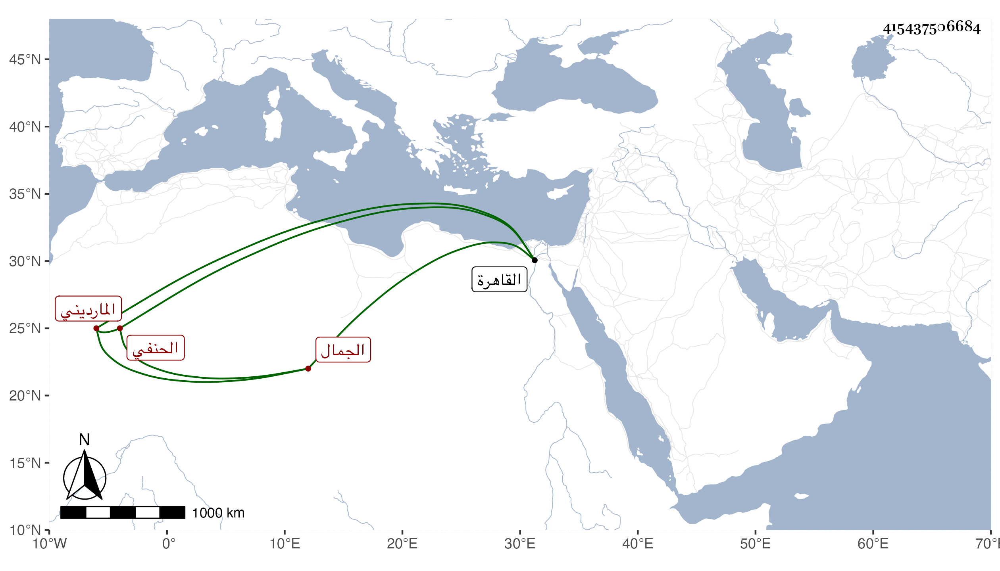

0902Sakhawi.DawLamic.ITO20230111-ara1.EIS1600.415437506684
Biography ID: 415437506684
1200
يوسف بن عبد الله الجمال المارديني الحنفي أخو أبي بكر الآتي . قدم القاهرة ووعظ الناس بالجامع الأزهر وحصل كثيرا من الكتب مع لين الجانب والتواضع والخير والاستحضار لكثير من التفسير والمواعظ . مات بالطاعون في سنة تسع عشرة وقد جاز الخمسين وخلف تركة جيدة ورثها أخوه ولم يلبث أن مات ذكره شيخنا أيضا ويختلج في ظني أنه الذي قبله والصواب في وفاته تسع عشرة لا تسع .
